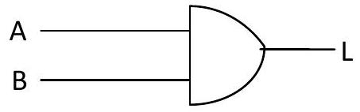
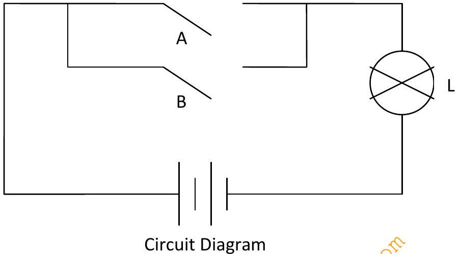

TOPIC 8: LOGIC GATES & BOOLEAN ALGEBRA
Introduction to Logic Mathematics
Mathematical logic is a subfield of mathematics exploring the applications of formal logic to mathematics. It bears close connections to meta-mathematics, the foundations of mathematics, and theoretical computer science.
Set theory
A set can be defined as a collection of things that are brought together because they obey a certain rule.
These 'things' may be anything you like: numbers, people, shapes, cities, bits of text ..., literally anything.
The key fact about the 'rule' they all obey is that it must be well-defined. In other words, it enables us to say for sure whether or not a given 'thing' belongs to the collection. If the 'things' we're talking about are English words, for example, a well-defined rule might be:
'... has 5 or more letters'
A rule which is not well-defined (and therefore couldn't be used to define a set) might be:
'... is hard to spell'
Requirement of a set
- A set must be well defined i.e. it must not leave any room for ambiguities e.g sets of all students- which? Where? When?
- A set must be defined in terms of space and time
- The objective (elements or members) from a given set must be distinct i.e each object must appear once and only once, Must appear but not more than once
- The order of the presentation of elements of a given set is immaterial e.g \(1,2,3=1,3,2=3,2,1\)
Types of Sets
In set theory, there are different types of sets. All the operations in set theory could be based on sets. Set should be a group of individual terms in domain. The universal set has each and every element of domain. We are having different types of sets. We will see about the different types of sets.
Different Types of Sets
There are different types of sets in set theory. They are listed below:
- Universal Set
- Empty set
- Singleton set
- Finite and Infinite set
- Union of sets
- Intersection of sets
- Difference of sets
- Subset of a set
- Disjoint sets
- Equality of two sets
Universal Set
The set of all the 'things' currently under discussion is called the universal set (or sometimes, simply the universe). It is denoted by U.
The universal set doesn't contain everything in the whole universe. On the contrary, it restricts us to just those things that are relevant at a particular time. For example, if in a given situation we're talking about numeric values - quantities, sizes, times, weights, or whatever - the universal set will be a suitable set of numbers (see bełow). In another context, the universal set may be {alphabetic characters} or {all living people\}, etc.
Singleton Set:
A set which contains only one element is called a singleton set.
For example:
- \(A=\{x: x\) is neither prime nor composite}
It is a singleton set containing one element, i.e., 1.
- \(B=\{x: x\) is a whole number, \(x<1\}\)
This set contains only one element 0 and is a singleton set.
- Let \(A=\left\{x: x \in N\right.\) and \(\left.x^{2}=4\right\}\)
Here A is a singleton set because there is only one element 2 whose square is 4.
- Let \(B=\{x: x\) is a even prime number}
Here B is a singleton set because there is only one prime number which is even, i.e., 2.
Finite Set:
A set which contains a definite number of elements is called a finite set. Empty set is also called a finite set.
For example:
- The set of all colors in the rainbow.
- \(N=\{x: x \in N, x<7\}\)
- \(P=\{2,3,5,7,11,13,17, \ldots . .\}\)
Infinite Set:
The set whose elements cannot be listed, i.e., set containing never-ending elements is called an infinite set.
For example:
- Set of all points in a plane
- \(A=\{x: x \in N, x>1\}\)
- Set of all prime numbers
- \(B=\{x: x \in W, x=2 n\}\)
Note:
All infinite sets cannot be expressed in roster form.
For example:
The set of real numbers since the elements of this set do not follow any particular pattern.
Cardinal Number of a Set:
The number of distinct elements in a given set A is called the cardinal number of A . It is denoted by \(n(A)\).
For example:
- \(A\{x: x \in N, x<5\} A=\{1,2,3,4\}\)
Therefore, \(n(A)=4\)
- B = set of letters in the word ALGEBRA
Therefore, \(n(B)=6\)
Equivalent Sets:
Two sets \(A\) and \(B\) are said to be equivalent if their cardinal number is same, i.e., \(n(A)=n(B)\).
The symbol for denoting an equivalent set is ' \(\leftrightarrow\) '.
For example:
Equal sets:
Two sets A and B are said to be equal if they contain the same elements. Every element of A is an element of \(B\) and every element of \(B\) is an element of \(A\).
For example:
\(A=\{p, q, r, s\} B=\{p, s, r, q\}\)
Therefore, \(A=B\)
The various types of sets and their definitions are explained above with the help of examples.
Empty Set
In mathematics, empty set is a set theory related topic. A set without any elements is said to be an empty set. This article helps you understand empty set by giving a clear idea about empty set with some example problems.
Empty Set Definition
The other name of empty set is null set \(\phi\). Consider two sets \(X=\{a, b, c, d\}\) and \(Y=\{1, 2, 3, 4, 5, 6\}\). Consider another set \(Z\) which represents the intersection of \(X\) and \(Y\). There is no common element for the set X and Y . So, intersection of X and Y is null.
\(Z=\{ \} \quad\) The representation of empty set is \(\}\).
Empty Set or Null Set:
- A set which does not contain any element is called an empty set, or the null set or the void set and it is denoted by \(\emptyset\) and is read as phi. In roster form, \(\emptyset\) is denoted by \(\}\). An empty set is a finite set, since the number of elements in an empty set is finite, i.e., 0 .
For example: (a) The set of whole numbers less than 0 .
(b) Clearly there is no whole number less than 0 .
Therefore, it is an empty set.
(c) \(N=\{x: x \in N, 3
- Let \(A=\{x: 2
Here A is an empty set because there isaio natural number between 2 and 3 .
- Let \(B=\{x: x\) is a composite numbor less than 4}.
Here \(B\) is an empty set because there is no composite number less than 4.
Note:
\(\emptyset \neq\{0\} \therefore\) has no element.
\(\{0\}\) is a set which has one element 0 .
The cardinal number of an empty set, i.e., \(n(\emptyset)=0\)
Cardinality of Empty Set:
Since we know that the cardinal number represents the number of elements that are present in the set and by the definition of an empty set, we know that there are no element in the empty set. Hence, the cardinal number or cardinality of an empty is zero.
Properties of Preparation for Empty Set:
- Empty set is considered as subset of all sets. \(\phi \subset X\)
- Union of empty set \(\phi\) with a set X is X . \(A \cup \phi=A\)
Intersection of an empty set with a set X is an empty set.
Solved Examples
Question 1: \(A\) is a set of alphabets and \(B\) is a set of numbers. What is the intersection of \(A\) and \(B\) ?
Solution: \(\mathrm{A} \cap \mathrm{B}=\{ \}\)
Question 2: Write the set A which is a set of goats with 10 legs.
Solution: A = \{ \}
Power Set of the Empty Set
A set is called the power set of any set, if it contains all subsets of that set. We can use the notation \(\mathrm{P}(\mathrm{S})\) for representing any power set of the set. Now, from the definition of an empty set, it is clear that there is no element in it and hence, the power set of an empty set i.e. \(\mathrm{P}(\phi)\) is the set which contain only one empty set, hence \(P(\phi)=\{\phi\}\)
Cartesian Product Empty Set
The Cartesian product of any two sets say A and B are denoted by A X B. There are some conditions for Cartesian product of empty sets as follows:
If we have two sets A and B in such a way that both the sets are empty sets, then \(\mathrm{A} \times \mathrm{B}=\phi \times \phi=\phi\). It is clear that, the cartesian product of two empty sets is again an empty set.
If \(A\) is an empty set and \(B=\{1,2,3\}\), then the e cartesian product of \(A\) and \(B\) is as follows: \(\mathrm{A} \mathrm{XB}=\{\phi\} .\{1,2,3\}=\{\phi \mathrm{X} 1, \phi \mathrm{X} 2, \phi \times 3\}=\{\phi, \phi, \phi\}=\{\phi\}\)
So, we say that if one of the set is an empty set from the given two sets, then again the Cartesian product of these two sets is an empty set.
Examples of Empty Sets
Given below are some of the examples of empty sets.
Solved Examples
Question 1: Which of the following represents the empty set?
- A set of cats with 4 legs
- A set of apples with red color
- A set of positive numbers in which all are less than 1
- A set of rectangles with 4 sides
Solution:
Option 1: A set of cats with 4 legs. This set is possible where cats are having 4 legs.
Logic Functions gates and circuitry
From Boolean algebra, we get three basic logic factions that form the basis of all digital computer functions. These basic functions are: AND, OR and NOT
These functions can be expressed mathematically using Boolean algebra as given.
NOTE - The input and output variables are usually represented by letters as ABC or XYZ
- The logic state of this variables is represented by binary numbers 0 and 1
AND function
The AND function can be thought of as a series circuit containing two or more switches
Circuit diagram.
The logic indicator L will be ON only when logic switches A and B are both crossed. Switches A and B have two possible logic states, open and crossed. This can be represented in binary form as 0 - open and 1 - crossed.
Logic indicator Lalso have two possible states 0 and 1
| A | B | L(x.y) |
|---|---|---|
| 0 | 0 | 0 |
| 0 | 1 | 0 |
| 1 | 0 | 0 |
| 1 | 1 | 1 |
The truth table is used to illustrate all the possible combinations of input and output conditions that can exist in a logic circuit. The Boolean expression used to represent an AND function is as follows
\(A \cdot B=L\)
And is symbolized as
OR function
The function can be thought of as a parallel circuit containing two or more logic switches
Here, the logic indicator L will be ON whenever logic switch A and B are crossed. The truth table, Expression and Symbol of OR function is as follows
| A | B | L(x+y) |
|---|---|---|
| 0 | 0 | 0 |
| 0 | 1 | 1 |
| 1 | 0 | 1 |
| 1 | 1 | 1 |
\(A+B=L\)
NOT function
It can be thought of as an inverter or negative circuit.
Circuit diagram
The logic indicator L will be ON whenever logic switch A is open.
The truth table, Expression and Symbol of NOT function is as follows
NAND
If an AND gate is followed by an NOT gate then the combination is called an NAND gate and has following truth table and Boolean expression.
| A | B | L(x.y)' |
|---|---|---|
| 0 | 0 | 1 |
| 0 | 1 | 0 |
| 1 | 0 | 0 |
| 1 | 1 | 0 |
\((A . B)^{\prime}=L\)
NOR
If an OR gate is followed by an NOT gate then the combination is called an NOR gate and has following truth table and Boolean expression.
| A | B | L(x+y)' |
|---|---|---|
| 0 | 0 | 1 |
| 0 | 1 | 0 |
| 1 | 0 | 0 |
| 1 | 1 | 0 |
\((A+B)^{\prime}=L\)

Symbol diagram
XOR
This output strictly on condition that input is either high but not 2 highs
XNOR
This output strictly on condition that input is either high but not 2 highs
Boolean Algebra
In 1850, George Boole, an English mathematician developed rules and theorems that became Boolean algebra.
Boole's work was an outcrop of work in physiology called LOGIC.
Logic can be used to break down complex problems to simple and understandable problems.
The binary nature of logic problems was studied by Cloude Shannon of MTI in 1938. Shannon applied Boolean algebra to relay logic switching circuits as means of realizing electric circuits.
Electric circuits used for digital computers are designed to generate only two voltage levels
Eg - high level ( ≈ 5V ) and low level ( ≈ 0V )
The binary number system requires two symbols hence its logical to identify a binary symbol with each voltage level. If we interpolate the high level as a binary 1and low level as a binary 0 , then we are using a positive logic system.
Terminologies in Boolean Algebra
Logic circuit - A computer switching/électronic circuit that consists of a number of logic gates and performs logical operations on data
A logic gate is an idealized or physical device implementing a Boolean function; that is, it performs a logical operation on one or more binary inputs, and produces a single binary output. A logic gate is a small transistor circuit, basically a type of amplifier, which is implemented in different forms within an integrated circuit. Each type of gate has one or more (most often two) inputs and one output.
Boolean operation is any logical operation in which each of the operands and the result take one of two values, as "true" and "false" or "circuit on" and "circuit off."
A Boolean Function is a description of operation (logic operation) on algebraic expression called Boolean expression which consists of binary variables, the constants 0 and 1, carried out in digital/electronic circuits and the logic outputting there off. The logic operation is well expressed in truth tables.
Truth tables
A truth table is a breakdown of a logic function by listing all possible values the function can attain. Such a table typically contains several rows and columns, with the top row representing the logical variables and combinations, in increasing complexity leading up to the final function.
Theorems of Boolean Algebra
Boolean algebra deals with algebraic expressions between Boolean variables. Boolean algebra is a mathematical style dealing in logic. A fundamental rule relating to Boolean variables is called Boolean theorems.
Boolean theorems
-
Cumulative laws
i. \(A+B=B+A\) ii. \(A B=B A\) -
Associative laws
i. \((A+B)+C=A+(B+C)=A+B+C\)
ii. \(A(B C)=(A B) C=A B C\) -
Distributive laws
i. \(A(B+C)=A B+A C\)
ii. \(A+B C=(A+B)(A+C)\)
- This state that an expression can be expanded by multiplying term by term just like ordinary algebra. It indicates thus we can factor an expression
i.e \(-A B^{\prime} C+A^{\prime} B^{\prime} C^{\prime}=B^{\prime}\left(A C+A^{\prime} C^{\prime}\right)\)- Common factor is B'
- Simplifying by distributive law
\(Y=A B^{\prime} C+A B^{\prime} D^{\prime}=A B^{\prime}\left(C+D^{\prime}\right)\) -
Identity law
i. \(A+A=A\) ii. \(A A=A\) -
Negative law
i. \(A^{\prime}=A^{\prime}\) ii. \(A^{\prime \prime}=A\) -
Redundancy laws
i. \(A+A B=A(1+B)=A(1)=A\) N/b 1+n=1 where n=any num/char
ii. \(A(A+B)=A A+A B=A+A B=A\)
iii. \(0+A=A\)
iv. \(0 A=0\)
v. \(1+A=1\)
vi. \(1 A=A\)
vii. \(A^{\prime}+A=1\)
viii. \(A^{\prime} A=0\)
ix. \(A+A^{\prime} B=A+B\)
x. \(A\left(A^{\prime}+B\right)=A B\)
EXAMPLE
Proves
-
\(A C+A B C=A C\)
Let \(y=A C+A B C\)
\(=A C(1+B)=A C\) since \(1+n=1\) -
\((A+B)(A+C)=A+B C\)
Let \(y=(A+B)(A+C)\)
\(=A(A+C)+B(A+C)=A A+A C+A B+C B=A+A C+A B+C B\)
\(=A(1+C)+A B+B C=A+A B+B C=A(1+B)+B C=A+B C\) -
\(A+A^{\prime} B=A+B\)
Let \(y=A+A^{\prime} B\)
\(=(A+A')(A+B)=1 \cdot (A+B) = A+B\) -
\((A+B)\left(A+B^{\prime}\right)\left(A^{\prime}+C\right)=A C\)
Let \(y=(A+B)\left(A+B^{\prime}\right)\left(A^{\prime}+C\right)\)
\(=(A A+A B^{\prime}+A B+B B^{\prime})(A^{\prime}+C)=(A+A(B'+B)+0)(A^{\prime}+C)\)
\(=(A+A(1))(A^{\prime}+C)=(A+A)(A^{\prime}+C)=A(A^{\prime}+C)=A A^{\prime}+A C=0+A C=A C\) -
Simplify the expression and show minimum gate implementation \(y=A B C^{\prime} D^{\prime}+A^{\prime} B C^{\prime} D^{\prime}+B C^{\prime} D\)
Since \(A+A^{\prime}=1\) and \(A \cdot 1=A\)
\(= B C^{\prime} D^{\prime}\left(A+A^{\prime}\right)+B C^{\prime} D=B C^{\prime} D^{\prime} \cdot 1+B C^{\prime} D\)
\(= B C^{\prime} D^{\prime}+B C^{\prime} D=B C^{\prime}\left(D+D^{\prime}\right)=B C^{\prime} \cdot 1=B C^{\prime}\)
Dedmorgans theorems
The theorems are useful in simplifying expressions in which a product or sum of variables is complimented or inverted.
The two theorems are
a) \((A+B)^{\prime}=A^{\prime} B^{\prime}\)
When the OR sum of two variables (A+B) is complimented, this is same as if the 2 variable's compliments were ANDed.
i.e. - compliment of an OR sum is AND product of the compliment.
b) \((A B)^{\prime}=A^{\prime}+B^{\prime}\)
Compliment of an AND product is equal to OR sum of its compliment
Karnaugh maps (K-maps)
K-maps/ vetch diagram is a method to simplify Boolean expressions. The maps reduce the need for extensive calculations by taking advantage of human pattern-recognition capability.
In K—map, the Boolean variables are transferred (generally from a truth table) and ordered according to the principles of gray code in which only one variable changes in between squares.
Once the table is generated and the output possibilities transcribed, the data is arranged into the largest possible groups containing \(2^{n}\) cells ( n=0,1,2,3... ) and the minterms generated through the axiom laws of Boolean algebra
Note
A minterm is a product (AND) of all variables in the function, in directs or complemented form. A minterm has the property that it is equal to 1 on exactly one row of the truth table.
A maxterm is a sum (OR) of all the variables in the function, in direct or complemented form. A maxterm has the property that it is equal to 0 on exactly one row of the truth table.
Don't care conditions are represented by X in the K-Map table. A don't-care term for a function is an input-sequence (a series of bits) for which the function output does not matter ( 0,1 ).
[K-Map Table Placeholder - MMD lines 2770-2801]
Procedure
K-map method may theoretically be applied to simplify any Boolean expression through works well with <=6 variable.
- Each variable contributes two possibilities. The initial value and its inverse.
- The variables are arranged in gray code in which only one variable changes between two adjacent grid boxes.
- Once the variables have been defined, the output possibilities are transcribed according to the grid location provided by the variables. Thus for every possibility of a Boolean input or variable the output possibility is defined.
- When the K-map has been completed, to derive a minimized function the one's or desired outputs are grouped into the largest possible rectangular groups in which the num of grid boxes (output possibilities) in the groups must be equal to power of two.
- Don't care(s) possibilities (generally represented by X ) are grouped only if the group created is larger than the group with minterms.
- The boxes can be used more than once if they produce the least number of groups and each desired output must be contained within at least one grouping.
- The groups generated are then converted to a Boolean expression by locating and transcribing the variable possibility attributed to the box, and by the axiom laws of Boolean algebra - in which, if the initial variable possibility and its inverse are contained within the same group the variable term is removed.
Note
Each group provides a "product" to create a "SOP" in the Boolean expression. To determine the inverse of the K-map, the 0's are grouped instead of the 1's. the two expressions are noncomplementary.
Each square in a K-map corresponds to a minterm and maxterm in the venn diagram.
Example
Following is an unspecified Boolean algebra function with Boolean variables A B C and D and their inverses
They can be represented in two different ways
- \(F(A, B, C, D)=\sum(6,8,9,10,11,12,13,14,15)\)
- \(F(A, B, C, D)=A^{\prime} B C D^{\prime}+A B^{\prime} C^{\prime} D^{\prime}+A B^{\prime} C^{\prime} D + A B^{\prime} C D^{\prime}+A B^{\prime} C D+A B C^{\prime} D^{\prime}+A B C D^{\prime}\)
Truth table
Using the defined minterms the table can be created as follow.
[Truth Table Placeholder - MMD lines 2832-2853]
K-MAP
The input variable can be combined in 16 different ways, so the K-map has 16 positions and thus is arranged in a 4x4 grid.
[K-Map Table Placeholders - MMD lines 2858-2893]
Therefore the expression is: \(\mathbf{F}(\mathbf{A}, \mathbf{B}, \mathbf{C}, \mathbf{D})=\mathbf{A}+\mathbf{B C}^{\prime}\)
Note
- Encircled groups may overlap.
- The grid is toroidally connected which means the grouping may wrap around edges.
Sum of products (SOP) - Summation of the minterm multiplicities
- It uses the minterms or variables that are high
\(F(A, B, C, D)=A+B C^{\prime}\)
Products of Sums (POS) - Multiplication of the maxterm summations
- It uses the maxterms or variables that are low
\(F(A, B, C, D)=(A+B)(A+C')\)
DON'T CARES
The variables with a don't care may assume minterms or maxterms so long as they produce the most simple circuit.
F(W,X,Y,Z)=YZ+XY+XZ - SOP
F(W, X, Y, Z)=(X+Z)(Y+Z) - POS[Don't Cares K-Map Table Placeholder - MMD lines 2916-2923]